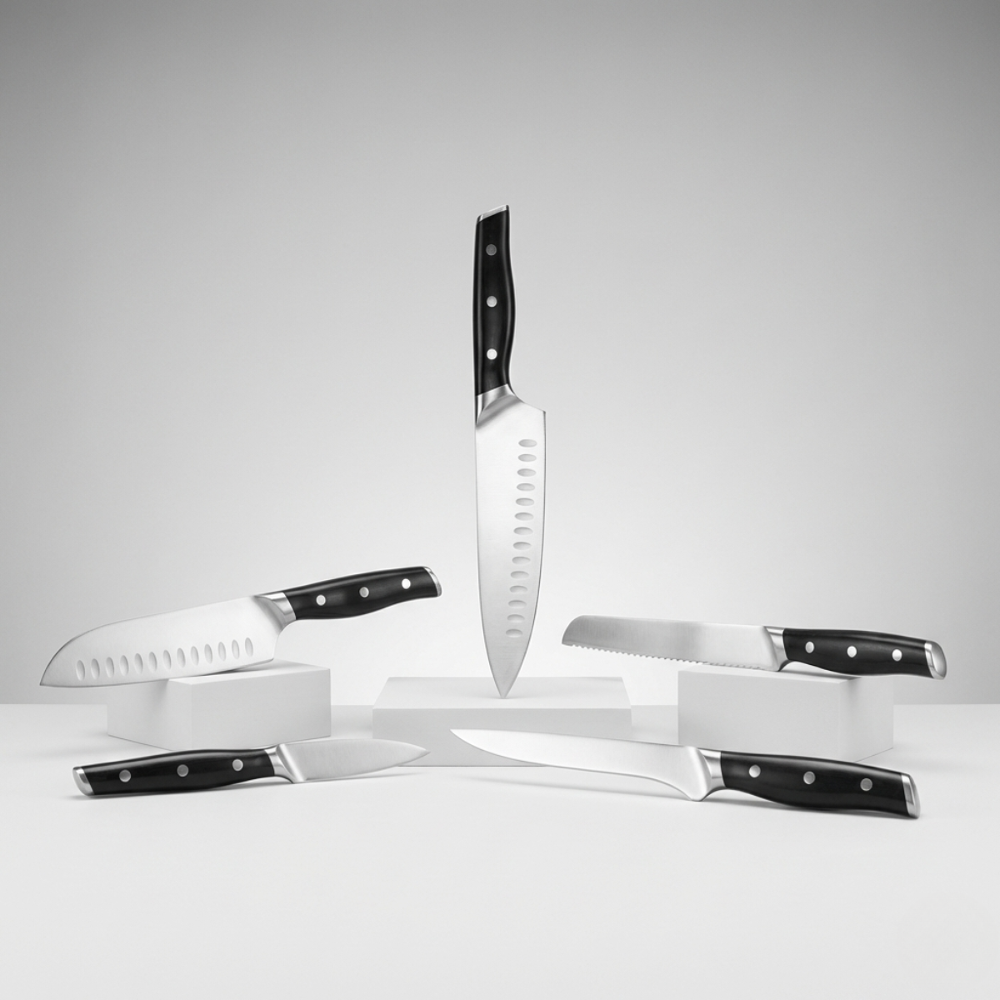
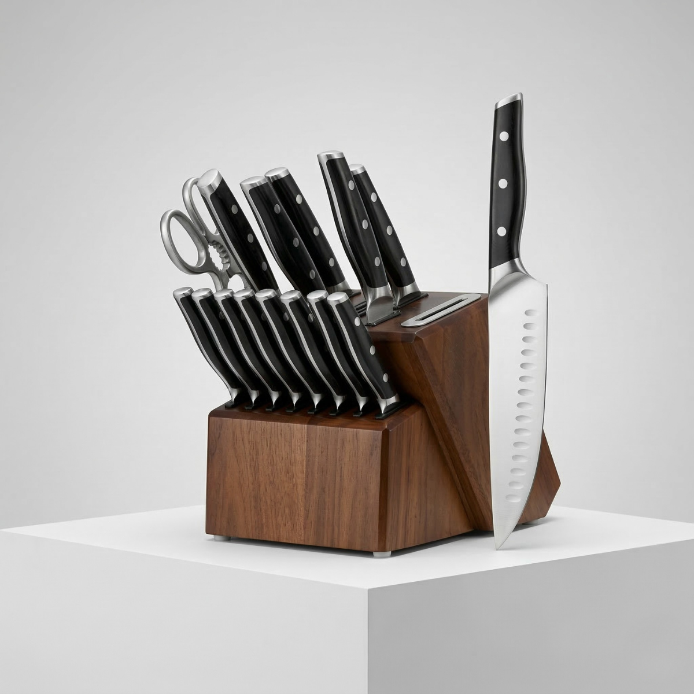
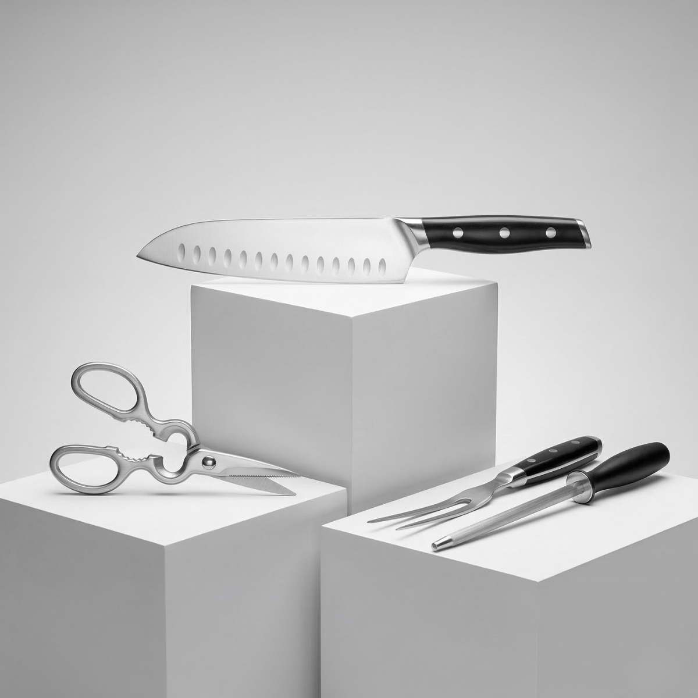
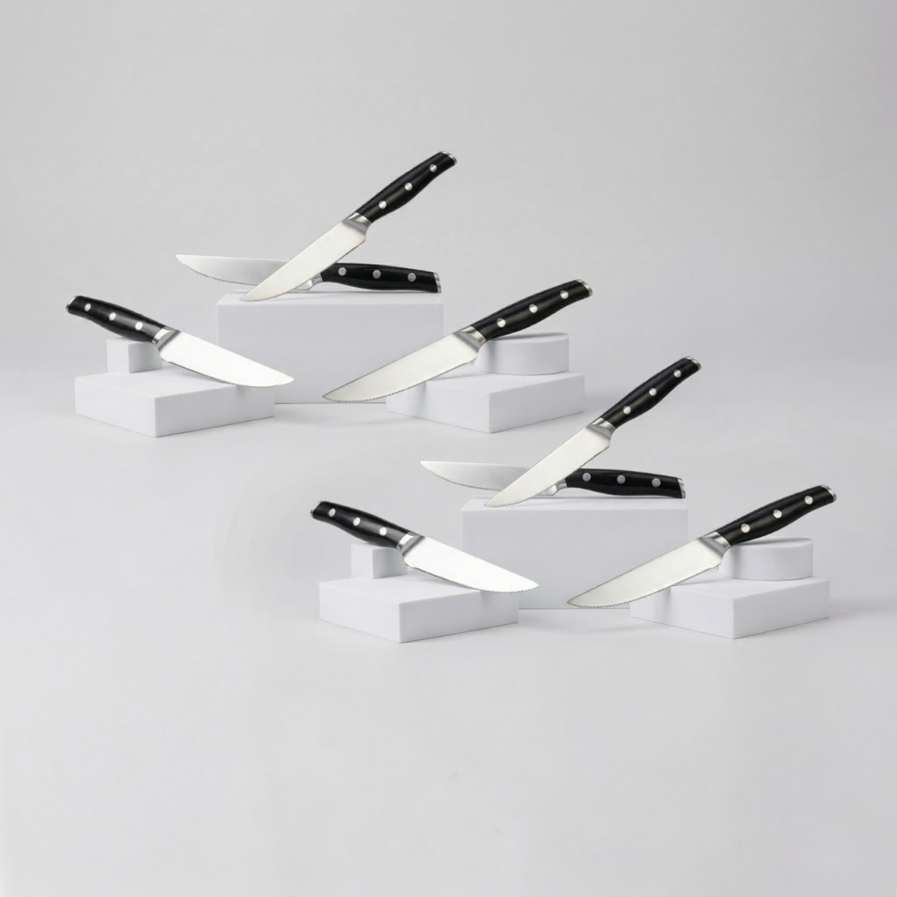

Juego de cuchillos del chef
Juego base de la línea para preparación general, pensado para quienes desean un set principal funcional y bien presentado.
Set de 5 piezas dentro del bloque principal.

Una selección pensada para cubrir preparación general, servicio de carne y cortes especializados con una línea visual elegante, profesional y coherente para tu cocina.
Esta página reúne el bloque principal de la línea: el juego del chef, el juego para trinchar y el juego de cuchillos para carne. Cada uno responde a un uso distinto dentro de una colección más completa y profesional.
Los juegos principales de la línea Cuchillos Serie Precisión 3 están orientados a cubrir distintos momentos de preparación y servicio dentro de la cocina.
Desde un set base para uso diario hasta opciones más enfocadas en trinchar o complementar el bloque con piezas orientadas a carne, esta selección permite construir una experiencia más completa y ordenada.
La línea mantiene una estética uniforme, un enfoque práctico y una presentación premium para integrarse con elegancia al resto del sistema.
Aquí se presenta el bloque principal de juegos de la línea, separado de las piezas individuales y accesorios para mantener una navegación más clara y profesional.
Reúne juegos pensados para cubrir cocina general, servicio y cortes orientados a carne dentro de una misma línea.
Mantiene una imagen coherente y elegante para que cada pieza y set luzcan como parte de una colección integral.
Separar juegos principales de accesorios y piezas individuales facilita comparar, entender y elegir con mayor claridad.
Esta selección te permite contar con opciones para preparación cotidiana, cortes especiales y servicio de carne en distintos contextos.

Juego base de la línea para preparación general, pensado para quienes desean un set principal funcional y bien presentado.
Set de 5 piezas dentro del bloque principal.

Set orientado a servicio y cortes más específicos, ideal para completar una experiencia más formal y precisa.
Set de 4 piezas dentro del bloque principal.

Juego integrado al bloque principal para complementar la línea con una opción orientada a carne y servicio especializado.
Diferente del juego de cuchillos para churrasco, que va en accesorios.
Este set funciona como la base principal para múltiples tareas de preparación dentro de la cocina.
Un set pensado para corte, servicio y presentación en preparaciones donde la precisión al servir importa más.
Este juego forma parte del bloque principal de la línea y se integra como una opción complementaria enfocada en servicio de carne dentro de una colección más completa.
Se mantiene separado del juego de cuchillos para churrasco, ya que ambos responden a usos distintos dentro de tu estructura de línea.
Abre el catálogo de la línea para revisar la presentación general del bloque completo, los juegos principales y la organización de la colección.
Escríbenos y te ayudamos a identificar cuál de estos juegos encaja mejor con tu estilo de cocina, tu forma de servir y el tipo de colección que deseas construir.